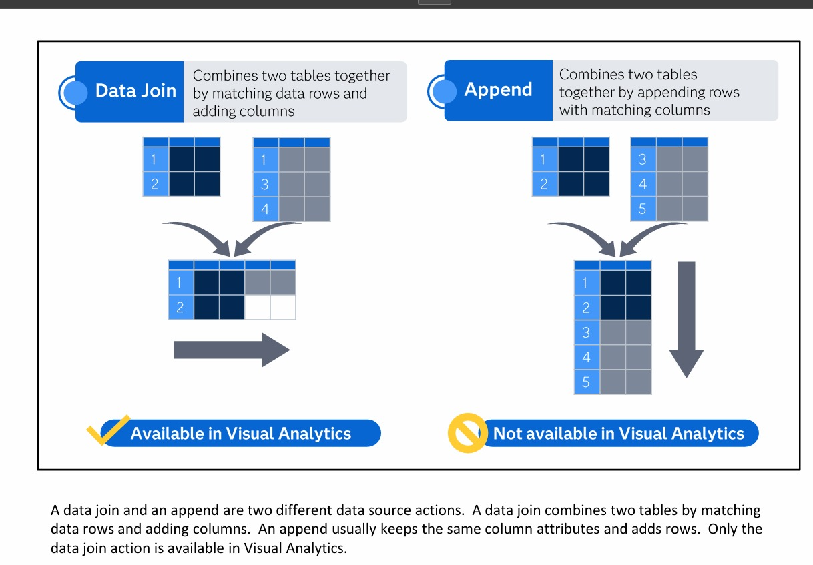
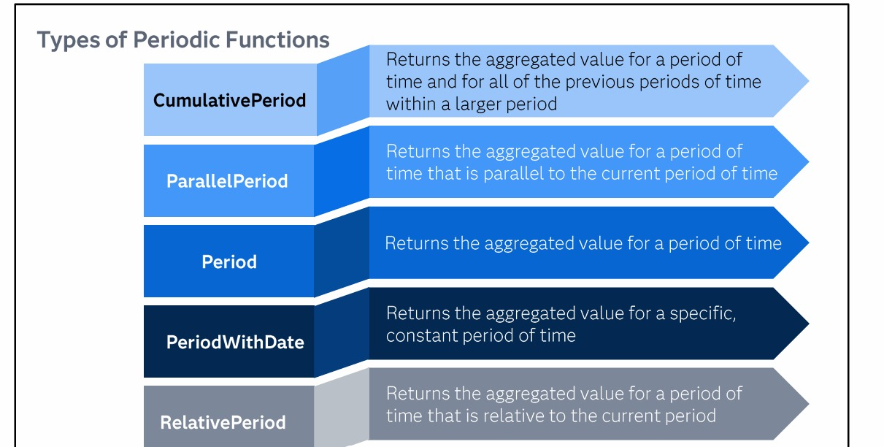
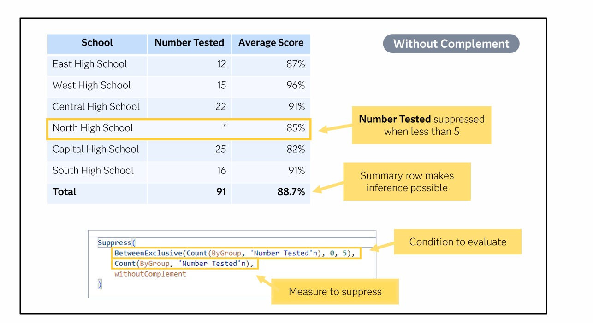
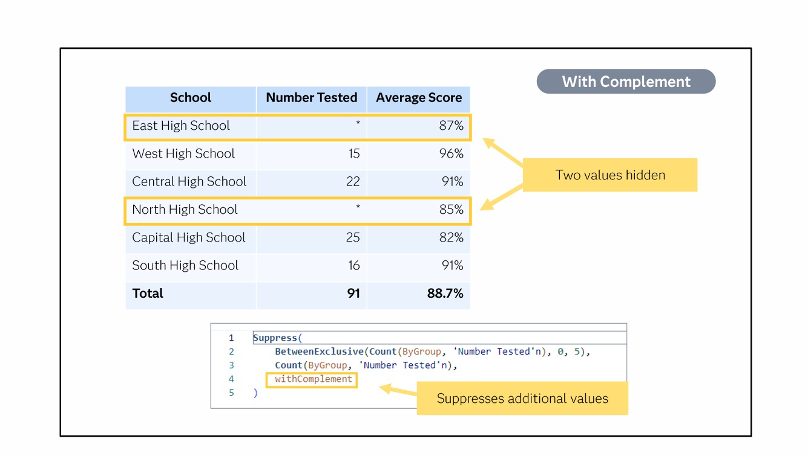

🗃️ M2 L4: Advanced Data — Full Guide ▶
🔗 4.1 Data Joins — Join vs Append

📌 The Critical Difference:
| 🔗 Data Join | 📥 Append | |
|---|---|---|
| What it does | Matches rows → adds columns | Adds rows under matching columns |
| Result | Wider table (more columns) | Longer table (more rows) |
| Available in VA? | ✅ YES (Left, Right, Inner, Full) | ❌ NO — NOT available |
| Analogy | Putting two card decks side by side 🃏🃏 | Stacking one deck on top 🃏➡️🃏 |
⚠️ EXAM ALERT: Append is NOT available in Visual Analytics! Only Joins are available. This is a very common exam trick question ❗
🧠 Memory Trick: "Join = Join columns (sideways). Append = Add rows (downwards). Join is Just fine in VA. Append is Absent."
🔗 Join Types & Considerations
4 Join Types: Left, Right, Inner, Full
⚠️ Key facts:
• Join creates a temporary table — executed every time report opens (for every user)
• Stored in CASUSER caslib — visible only to creator
• Can join only 2 tables at a time — no self-joins ❌
• Only simple matching available — dates must have matching formats
• Temporary results can be very large — impacts concurrent user performance ⚠️
📅 4.2 Periodic Functions — The 5 Types

📌 What are Periodic Functions?
"Periodic functions aggregate values over time. Evaluated using time intervals." They're used for things like year-over-year comparisons, running totals, etc.
"Periodic functions aggregate values over time. Evaluated using time intervals." They're used for things like year-over-year comparisons, running totals, etc.
| Function | What it returns | Analogy 🧠 |
|---|---|---|
| CumulativePeriod | Value for current period + ALL previous periods within a larger period | Running total 🏃 — like a snowball rolling downhill, growing bigger |
| ParallelPeriod | Value for the same period in a previous cycle (e.g., same quarter last year) | Time travel ⏪ — go back to the same time last year |
| Period | Value for a specific period of time | SnapShot 📸 — just that one period, nothing else |
| PeriodWithDate | Value for a specific, constant period (always the same dates) | Fixed date 🔒 — always points to the same calendar period |
| RelativePeriod | Value for a period relative to the current period (e.g., last 3 months) | Moving window 🪟 — shifts based on "now" |
🧠 Memory Trick:
• Cumulative = Current + all Coming before (running total)
• Parallel = Previous cycle (same spot, different year)
• Period = Point in time (just that one)
• PeriodWithDate = Permanent date (stays constant)
• Relative = Rolling window (moves with current date)
• Cumulative = Current + all Coming before (running total)
• Parallel = Previous cycle (same spot, different year)
• Period = Point in time (just that one)
• PeriodWithDate = Permanent date (stays constant)
• Relative = Rolling window (moves with current date)
🔒 4.3 Suppress Function — Data Privacy
📌 What is Suppress?
The
The
Suppress function hides (suppresses) aggregated data values for privacy. It's an Advanced Aggregated Function used when displaying aggregated data could reveal sensitive information about individuals.
🔓 Suppress — Without Complement

How it works:
Example scenario: Hide "Number Tested" when the count is less than 5.
North High School has only 3 students tested → count is less than 5 → value is suppressed (shows *)
BUT: Total = 91. If you do 91 - (12+15+22+25+16) = 1, you can figure out North = 1.
With
🔑 In this mode: Only the values meeting the condition are hidden. If the total gives it away, that's acceptable.
Suppress(condition, measure, withoutComplement)Example scenario: Hide "Number Tested" when the count is less than 5.
North High School has only 3 students tested → count is less than 5 → value is suppressed (shows *)
BUT: Total = 91. If you do 91 - (12+15+22+25+16) = 1, you can figure out North = 1.
With
withoutComplement: The suppressed value can still be INFERRED from the total. The summary row makes inference possible.🔑 In this mode: Only the values meeting the condition are hidden. If the total gives it away, that's acceptable.
🔒 Suppress — With Complement

How it works:
Same scenario: Hide "Number Tested" when count is less than 5.
East High School also has a low count → East and North are both hidden (2 values hidden).
Why? If only North was hidden, you could calculate its value from the total. By hiding an additional value (East), you CANNOT tell whether any specific hidden school's value is high or low.
Total = 91, but now you don't know if East + North = some combination. You can't infer individual values.
🔑 In this mode: Additional values are suppressed to prevent inference. More values are hidden than strictly necessary.
Suppress(condition, measure, withComplement)Same scenario: Hide "Number Tested" when count is less than 5.
East High School also has a low count → East and North are both hidden (2 values hidden).
Why? If only North was hidden, you could calculate its value from the total. By hiding an additional value (East), you CANNOT tell whether any specific hidden school's value is high or low.
Total = 91, but now you don't know if East + North = some combination. You can't infer individual values.
🔑 In this mode: Additional values are suppressed to prevent inference. More values are hidden than strictly necessary.
| Mode | Meaning | What gets hidden | Can you infer the value? |
|---|---|---|---|
withoutComplement |
Without additional hiding | Only values matching the condition | ✅ Yes — if total is visible, you can calculate it |
withComplement |
With additional hiding to prevent inference | Condition values + extra values to obscure totals | ❌ No — too many values hidden to calculate |
🧠 Memory Trick:
• withoutComplement = "Without" = "What you see is what's hidden" (no extra hiding)
• withComplement = "Complement" = "Complete the hiding" (hide more to protect privacy)
"Without = you can figure it out (no extra hiding). With = you can't figure it out (extra values hidden)."
• withoutComplement = "Without" = "What you see is what's hidden" (no extra hiding)
• withComplement = "Complement" = "Complete the hiding" (hide more to protect privacy)
"Without = you can figure it out (no extra hiding). With = you can't figure it out (extra values hidden)."
⚠️ EXAM ALERT: The key difference between
withComplement and withoutComplement is that withComplement suppresses additional values beyond the condition to prevent inference from totals. If you see "Two values hidden" → that's withComplement ❗
📋 Quick Reference — M2 L4 Functions
| Category | Functions | Purpose |
|---|---|---|
| Conditional | IF...ELSE, SELECT...WHEN | Branch logic based on conditions |
| Text | Substr, Trim, Upcase, Lowcase, ReplaceWord, GetWord, Length, Cat, Cats | Manipulate string/character data |
| Date/Time | Year, Month, Day, Weekday, DatePart, TimePart, Today, Now, IntNX, IntCK, DHMS | Extract/manipulate date/time values |
| Aggregated Simple | SUM, AVG, MIN, MAX, COUNT, STD, VAR, NMiss | Basic summary statistics |
| Aggregated Periodic | CumulativePeriod, ParallelPeriod, Period, PeriodWithDate, RelativePeriod | Time-based aggregations |
| Aggregated Advanced | CoefVar, CSS, Kurtosis, PvalT, Skewness, First, Last, Suppress | Statistical measures + data privacy |
🎯 Must-Know Exam Points — M2 L4:
1. Join = adds columns (✅ Available). Append = adds rows (❌ NOT available) ⚠️
2. Joins are temporary — run every time, every user. Stored in CASUSER ⚠️
3. Periodic functions: Cumulative (running total), Parallel (same time last year), Period (snapshot), PeriodWithDate (fixed), Relative (moving window) ✅
4. Suppress:
5. IntNX = advance date. IntCK = count intervals between dates ✅
6. Aggregated functions do NOT accept aggregated measures ❌
1. Join = adds columns (✅ Available). Append = adds rows (❌ NOT available) ⚠️
2. Joins are temporary — run every time, every user. Stored in CASUSER ⚠️
3. Periodic functions: Cumulative (running total), Parallel (same time last year), Period (snapshot), PeriodWithDate (fixed), Relative (moving window) ✅
4. Suppress:
withoutComplement = hides only condition. withComplement = hides extra to prevent inference ⚠️5. IntNX = advance date. IntCK = count intervals between dates ✅
6. Aggregated functions do NOT accept aggregated measures ❌